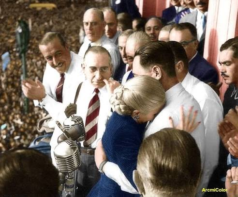

Un espacio del barrio, para el barrio.
Nos organizamos para mejorar la vida de nuestra gente. Apostamos a la memoria, al diálogo y a la acción colectiva para que cada persona sea parte de lo que sucede en Villa Insuperable.
Somos ARC-VILLAINSUPERABLE: un espacio de encuentro para impulsar ideas, fortalecer a nuestra comunidad y construir un barrio mejor entre todos.

Construimos desde el barrio, con la comunidad como protagonista.
Villa Insuperable · La MatanzaCreemos en la participación, la organización y el compromiso cotidiano con cada vecino y vecina.
Nos organizamos para mejorar la vida de nuestra gente. Apostamos a la memoria, al diálogo y a la acción colectiva para que cada persona sea parte de lo que sucede en Villa Insuperable.
Trabajamos desde la base, con el pueblo como centro.
Compromiso real con nuestra comunidad y nuestros valores.
La política sirve para cambiar lo que no funciona.
Escuchamos, acompañamos y construimos cerca.
Elegí una etapa para leerla. Un recorrido por sus protagonistas y los hechos que marcaron a la Argentina contemporánea.
Desde la Secretaría de Trabajo y Previsión, Juan D. Perón impulsó políticas laborales y una relación directa con organizaciones sindicales. El 17 de octubre de 1945, una movilización popular en Plaza de Mayo reclamó su liberación y se convirtió en una fecha central para el movimiento.


Durante las presidencias de Perón se promovieron políticas de industrialización, ampliación de derechos sociales y laborales, y un papel activo del Estado. Eva Perón tuvo una actuación decisiva en la acción social y en la conquista del voto femenino.
Tras el golpe de Estado de 1955, el peronismo fue proscripto durante años y Perón permaneció en el exilio. En ese período, militantes, sindicatos y organizaciones mantuvieron activa la identidad política y reclamaron el regreso de la democracia plena.
En 1973 el peronismo volvió a competir sin proscripción. El regreso de Perón al país fue multitudinario, en un contexto atravesado por fuertes tensiones políticas y sociales. Tras su fallecimiento en 1974, asumió María Estela Martínez de Perón.
Desde la recuperación democrática de 1983, el peronismo participó en gobiernos nacionales, provinciales y municipales, con diferentes expresiones y debates internos. Su identidad continúa vinculada a la justicia social, la independencia económica y la soberanía política.
Las fotografías se incorporarán como archivos propios dentro del repositorio. Este recorrido es una síntesis introductoria y no reemplaza el estudio de fuentes históricas.

Generamos espacios de encuentro para acompañar las necesidades del barrio.

Escuchamos ideas y construimos respuestas colectivas para nuestra comunidad.

Cada acción suma cuando nos organizamos y participamos juntos.

Sumate, acercanos una idea o conocé más sobre las actividades de nuestra comunidad.